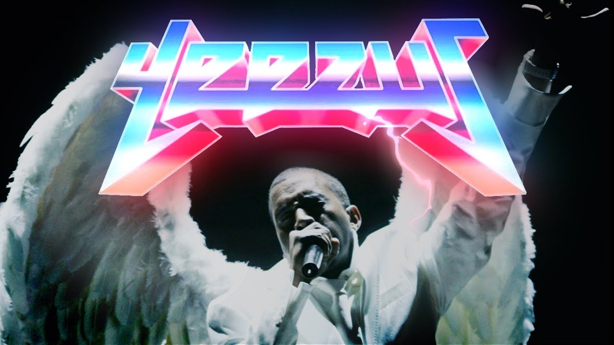
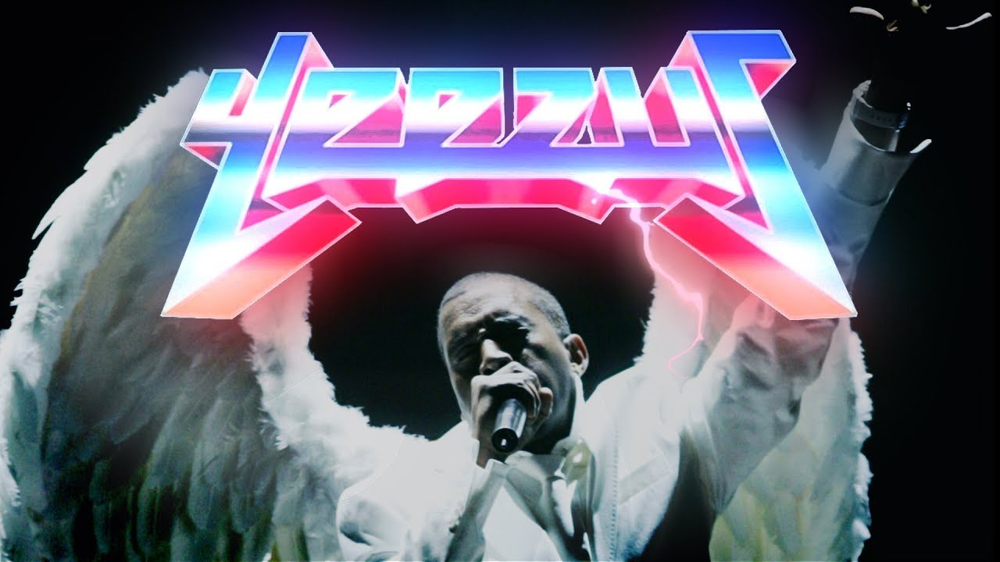

Kanye's phase 3 is his current arc music wise. Phase 3 is when he begins his transition into a more bombastic, confident, and arrogant person to a more responsible and caring adult. This begins with Yeezus, a complete corruption of what people believe Kanye to be. The album is dark, the sounds are heavy and loud, and this album takes the electronic beats up a hundred notches. Yeezus is his most experimental album, and it shows through his collaboration with Daft Punk, Hudson Mohawke, and Travis Scott. The album debuted number one on the Billboard 200.
 

The Life of Pablo is when Kanye truly begins to show his transition. In this album Kanye returns to soulful beats, even producing some straight up gospel music with the song "Ultralight Beam".


My Beautiful Dark Twisted Fantasy was Kanye's fifth studio album, released in late 2010. MBDTF is widely considered Kanye's magnum opus, his greatest piece of art work to date. The album followed a period of heavy controversy with Kanye, who exiled himself to Hawaii in 2009. The album took on a maximalist aesthetic, and it shows on a numerous amount of hit singles on the album, which include "Power" "Runaway" "Monster" and "All of the Lights". The album is a huge bombastic show of Kanye's celebrity life. The album also shows consumer culture, race issues, and the faults in the belief of the American Dream. MBDTF debuted number one on the Billboard 200, and sold more than 1.3 million copies in the U.S.